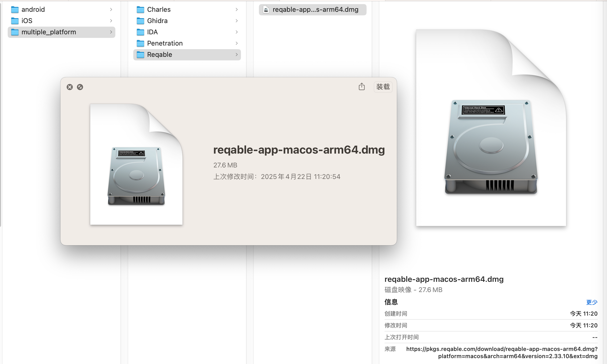
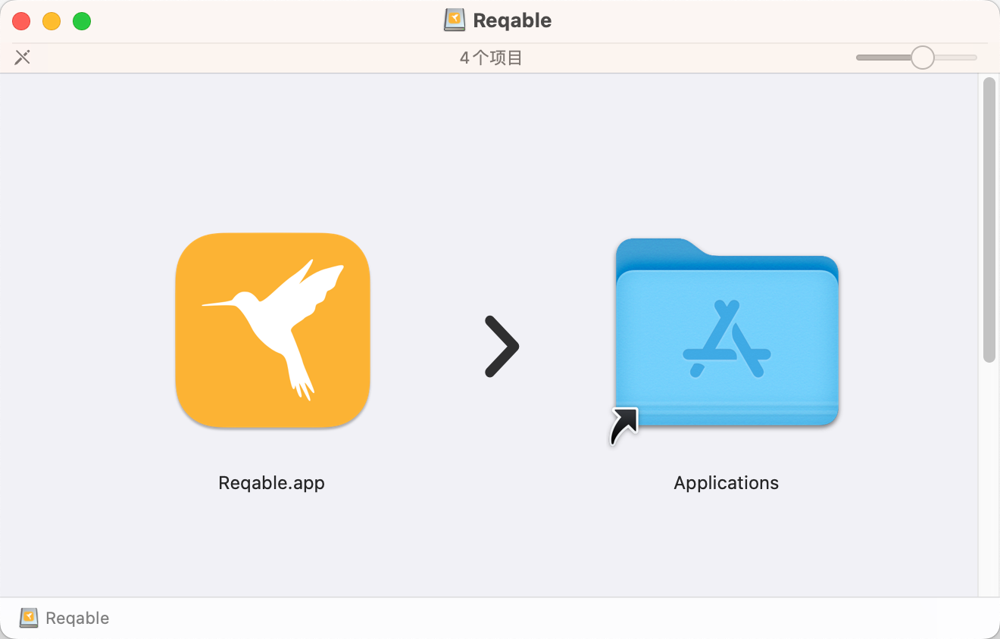
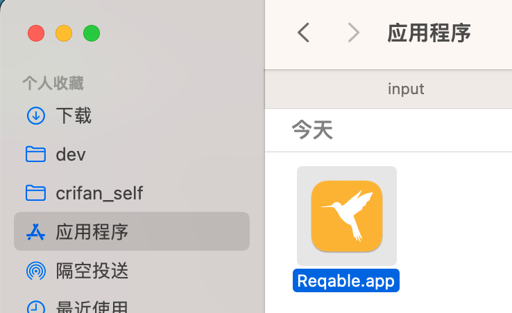
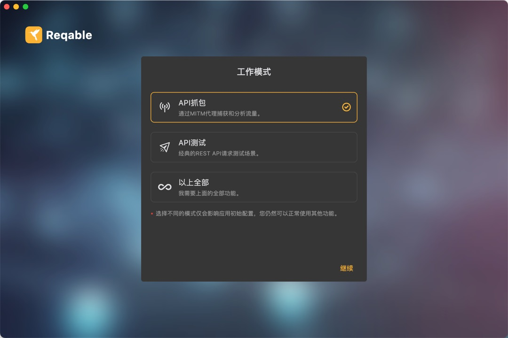
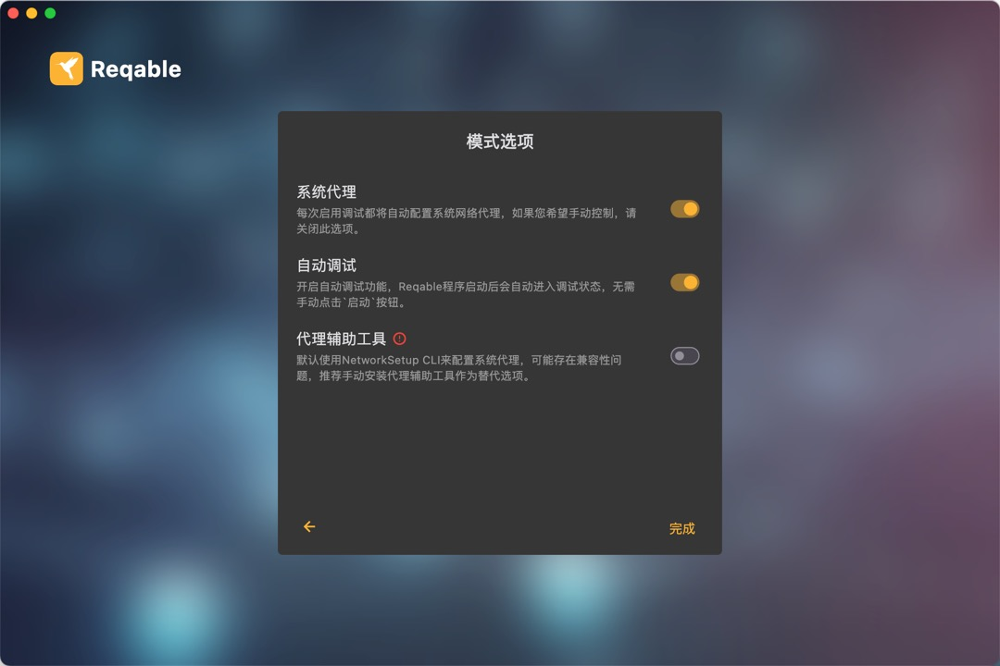
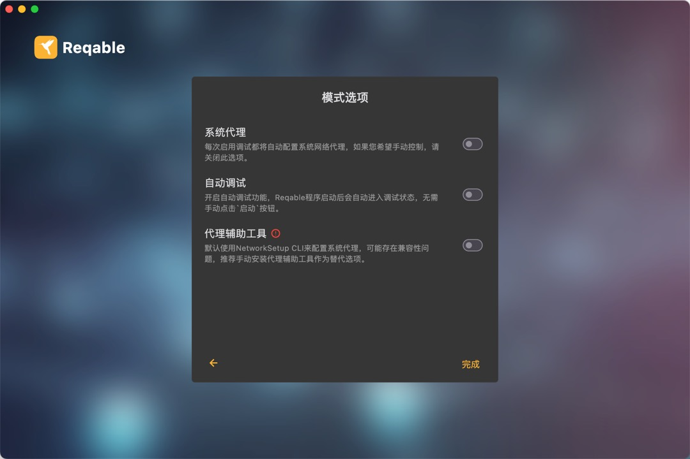
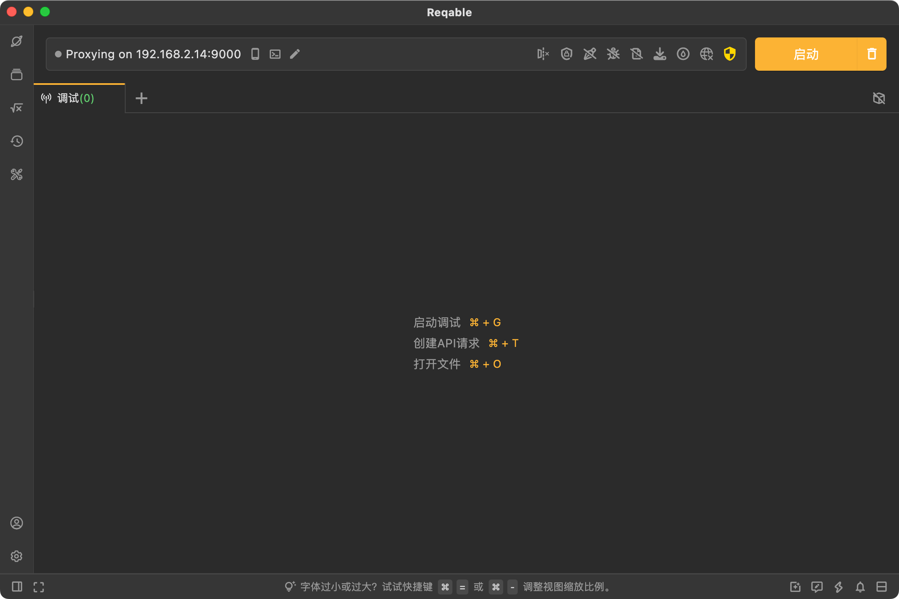
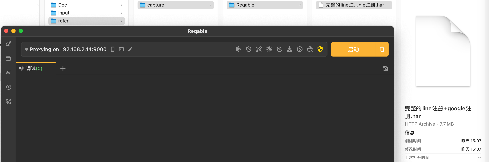
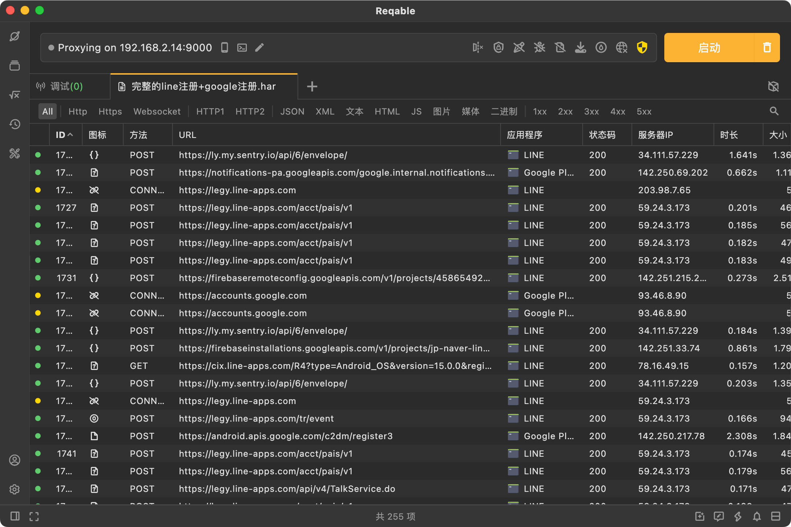
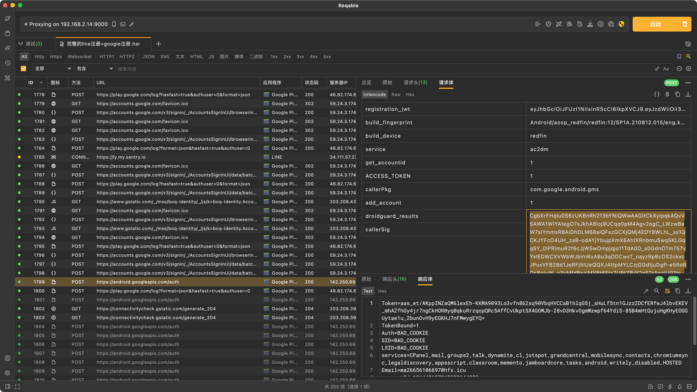

Mac
Mac中下载和安装Reqable
给Mac中安装Reqable：
去官网 []客户端下载 | Reqable · API抓包调试 + API测试一站式工具(https://reqable.com/zh-CN/download/) 去下载对应版本，此处是Mac M2 是Apple Silicon的ARM芯片，所以是：
下载到：reqable-app-macos-arm64.dmg

双击dmg，拖动到 应用程序 目录：

即可在 应用程序 中看到：Reqable

Mac中打开和初始化设置Reqable
双击启动后：
设置工作模式，此处选择：API抓包

再设置模式选项细节：

默认：开启了：系统代理，开启了自动调试，此处暂时不用，所以去关闭掉：

进入主界面了：

Mac中使用Reqable
此处可以去打开之前的抓包文件har：

看看效果：

此处去搜索之前关注的点：droidguard_results，可以找到结果：

即可。